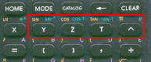
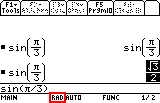

Vous avez une TI89 (normale ou Titanium), une TI92 (Plus) ou une Voyage 200 et vous n'avez pas la moindre idée de ce que l'on peut en faire ? Vous êtes à la bonne adresse ! Ce tutoriel va vous montrer pas à pas comment exploiter les capacités de la TI89 au lycée. Après l'avoir lu, il n'y aura pas un seul exo de maths dont vous ne pourrez immédiatement vérifier les résultats avec la calculatrice (enfin, j'espère) ! Ça fait du boulot en perspective ! ;)
Voici donc une TI89. En gros, il y a 2 parties : l'écran et le clavier, mais je ne vais pas faire un tutoriel pour vous dire ça ! ^^
En fait, on peut diviser la calculatrice en 6 parties :
Le clavier ;
Les modificateurs de touches (l'équivalent de Ctrl, Alt et Shift sur les claviers d'ordinateurs) ;
Les touches qui permettent de dérouler le menu affiché en haut de l'écran (partie 6) ;
La ligne de commande : c'est ici que s'affiche ce qu'on écrit ;
L'historique : ici, ce sont tous les calculs précédents qui s'affichent ;
Le menu : il s'affiche en appuyant sur la touche de menu correspondante (F1, F2, etc.).
Bon, on va commencer à faire des calculs très compliqués, alors accrochez-vous ! Tapez 2+2 puis ENTER (la touche bleue en bas à droite). Félicitations, vous savez maintenant que 2 et 2 font 4. Avec ça, vous avez le bac direct ! :ange: On va maintenant voir ce que peut vraiment faire la TI89 avec des nombres.
D'abord une simple division. Entrez 234/556 (la touche division est dans la colonne de droite, entre la touche x et la touche ^) puis ENTER et vous obtenez... \frac{117}{278}, qui est une fraction ! En effet, par défaut, la TI89 cherche à donner un résultat exact, elle renvoie donc la fraction sous forme irréductible. Pratique pour simplifier les fractions : c'est automatique sur la TI89 ! :p
Mais si je veux connaître la valeur approchée ?
Après ces calculs, vous devriez avoir cet écran. On comprend bien à quoi sert l'historique à présent : tous les calculs précédents sont visibles et cela permet de bien suivre le cours des calculs. De plus, on a, à gauche, ce que l'utilisateur a entré, et à droite, le résultat : pratique pour être bien sûr que l'on n'a pas oublié un chiffre dans le calcul !
Je m'explique : au-dessous de la ligne de commande, il y a une zone dont je n'ai pas encore parlé. C'est la barre d'état, qui indique différentes informations sur l'état actuel de la TI89, par exemple si les piles sont bientôt vides ou combien de calculs sont affichés dans l'historique.
Mais pour l'instant, on va s'intéresser à une seule de ces données : celle qui est au centre de la barre d'état. Dans l'écran qui affiche des fractions en résultat, il y a écrit AUTO tandis que dans l'écran problématique, il y a APPROX.
Nous allons donc examiner ce mode d'un peu plus près et voir comment il est possible de le modifier. À l'attaque ! :pirate:
Le réglage des modes
On accède au réglage des modes en pressant la touche MODE de la TI89 (à droite de la touche HOME). Ce qui s'affiche, c'est une boîte de dialogue qui contient tous les réglages pour les modes de calcul. Vous pouvez reconnaître à la 4e ligne le réglage pour des calculs en radians ou degrés, il y en a beaucoup d'autres.
Mais décrivons d'abord le fonctionnement de cette boîte à mystères ! :magicien:
Il y a d'abord le curseur qui indique à quelle ligne on se trouve.
Ensuite, les boutons qui indiquent que pour enregistrer les modifications (quand on sélectionne un autre mode), on appuie sur ENTER, et sur ESC pour annuler les changements de mode.
Cette petite flèche vers le bas indique qu'il y a encore (!) d'autres modes plus bas, on y accède en descendant le curseur.
Ces boutons sont des touches de raccourci pour les feignants comme moi qui ne veulent pas appuyer 50 fois sur la flèche du bas pour arriver au réglage du tout dernier mode. On presse F3, et le curseur saute directement à la page 3 des réglages. Pratique, non ? ;)
Comme vous pouvez le constater, la TI89 propose énormément de modes de calcul. Chaque ligne de cette boîte de dialogue indique un réglage différent.
Pour l'instant, ce qui nous intéresse, c'est le mode AUTO/APPROX. On va donc descendre dans les options jusqu'à arriver à ce niveau, les partisans du moindre effort (pas tous à la fois s'il vous plaît :soleil: ) appuient sur la touche F2.
En appuyant sur la touche de droite, les trois options de ce mode s'affichent :
Approximate : que l'on calcule des nombres décimaux ou des fractions, la TI89 renvoie toujours un nombre décimal.
Exact : c'est exactement le contraire d'Approx, c'est donc systématiquement une fraction irréductible qui est renvoyée.
Auto : c'est le mode intermédiaire qui renvoie des fractions si l'on entre des fractions, et des nombres décimaux si l'on entre des nombres décimaux.
Et si l'on mélange les fractions et les nombres décimaux en mode AUTO ?
Personnellement je préfère ce mode, car le mode APPROX n'est pas pratique pour des calculs de fractions et le mode EXACT ne l'est pas pour les calculs avec des virgules, étant donné qu'il renvoie systématiquement une fraction. Par contre, le mode AUTO sait tout de suite s'il faut afficher le résultat en fraction ou en nombre décimal. De plus si l'on veut afficher une fraction en nombre décimal, il suffit d'appuyer sur la touche diamant puis ENTER, comme on l'a vu plus haut.
Et si l'on veut afficher un nombre décimal en fraction ? :-°
On va donc sélectionner le mode AUTO, puis on valide en pressant sur ENTER. On confirme les modifications en pressant à nouveau sur ENTER, et voilà le travail ! :lol:
Les racines carrées
Maintenant que les fractions n'ont plus de secret pour nous, passons à quelque chose de plus intéressant. On va simplifier les racines carrées. Mais d'abord, où se trouve la touche « racine carrée » ?
Eh bien en fait, elle est un peu cachée, et elle se trouve là : Comme elle est affichée en jaune au-dessus de la touche de multiplication, on l'entre dans la ligne de commande en appuyant sur la touche 2nd, puis sur la touche multiplication, et le signe « racine carrée » apparaît dans la ligne de commande ! :magicien:
Mais revenons à nos moutons : on écrit ensuite 12, puis on tape ENTER et on a :
Eh oui : on a oublié de fermer la parenthèse qui avait été ouverte automatiquement avec l'insertion de la racine carrée. Dans la TI89, il faut toujours refermer toutes les parenthèses ouvertes. On referme donc la parenthèse et on a :
La fraction a donc été automatiquement simplifiée en racine de 3. Bien sûr, on peut combiner les racines avec les fractions, la TI89 fera toutes les simplifications qu'il faut :
C'est d'ailleurs là que les parenthèses deviennent importantes, comme ici pour mettre 1+\sqrt{9} au dénominateur. On est obligé de mettre des parenthèses, car sans elles cela donne :
Le \sqrt{9} n'est plus sous la fraction. Heureusement, l'affichage en Pretty Print (Affichage mathématique) de la TI89 veille :zorro: pour nous montrer immédiatement que la calto a compris différemment ce qui a été rentré. Et si vous voulez le résultat approché, faites bien sûr le diamant puis ENTER :
Nous savons donc maintenant calculer des fractions, des racines carrées et régler le mode pour afficher le résultat en fraction ou en décimal. Il faut parfois faire attention après avoir utilisé certains programmes qui changent le mode sans prévenir ! Mais maintenant, gare à eux s'ils essaient seulement ! :pirate: Tout ça était très sympathique, mais nous n'avons même pas encore vu ce qui fait la vraie force de la TI89 : le calcul formel, qui sera introduit dans la prochaine partie qui n'attend que nous pour commencer ! ^^
Là ça commence à devenir intéressant : on va prendre un polynôme pas trop compliqué que l'on va s'occuper de charcuter comme il le mérite ! :pirate: Prenons x^3-3x+2 qui a l'air assez sympa (enfin, avant qu'on se soit occupé de lui ! :diable: ). On va d'abord le multiplier par (x+2). Facile, on écrit (x^3-3x+2)(x+2) et on appuie sur ENTER :
Hé, mais ça ne marche pas ?
En effet, pour les nombres, la TI89 cherche à les simplifier, elle les calcule donc, mais pour les expressions (c'est ainsi que l'on appelle les formules avec des x et des y), il n'y a pas de forme simplifiée. En effet, dans notre expression, quelle est la forme la plus simple : factorisée ou développée ? Puisqu'il n'y a pas de forme simple (car chaque forme a ses avantages pour certains calculs), la TI89 conserve l'expression telle quelle, et il faut donc lui demander explicitement de la développer, en utilisant une fonction.
Développement et factorisation
Pour développer un polynôme, on va utiliser la fonction expand(). Facile à retenir, c'est comme pour expansion.
Euh... ça se mange ? o_O
Mais commençons sans plus tarder ! Si vous vous souvenez encore du début du tuto, on avait brièvement parlé d'un certain menu accessible avec les touches F1-F5. Eh bien, ce menu contient les principales fonctions de la TI89, dont celle que nous allons utiliser. En appuyant sur F2, le 2e menu se déroule et on voit la fonction expand() à la 3e ligne :
On déplace le curseur avec les flèches de direction (ça on commence à connaître ;) : c'est le même principe que pour naviguer dans le réglage des modes ; d'ailleurs pour annuler on appuie aussi sur ESC), puis on sélectionne en pressant ENTER et la fonction expand() se retrouve collée dans la ligne de commande. On complète en écrivant le polynôme après la parenthèse qui s'est ouverte, on referme la parenthèse, ENTER et... miracle ! La TI89 a développé le polynôme !
C'est très joli tout ça, mais comment faire le contraire ? Pour factoriser une expression qui est développée on utilise aussi une fonction ?
On va d'ailleurs l'utiliser immédiatement pour factoriser ce que l'on vient de développer (tant que c'est la TI89 qui fait le boulot ! :p ). On appuie donc sur F2, puis sur 2, et la fonction factor() est collée dans notre ligne de commande : ce n'est pas pour rien que les éléments du menu sont numérotés, ils correspondent en fait à des raccourcis clavier. Et ce n'est pas fini ! Au lieu de devoir réécrire le dernier résultat, il existe un autre raccourci : en appuyant sur la flèche du haut, on sélectionne le dernier résultat. À présent, il suffit de presser ENTER, et le résultat sélectionné est collé à son tour dans la ligne de commande ; il n'y a plus qu'à fermer la parenthèse, presser ENTER, et le tour est joué. Génial, non ? :lol:
Ah, ils pensent à tout les petits gars de Texas Instruments ! :magicien:
Maintenant, on va factoriser x^2-2 :
En fait, factor() ne factorise que les racines « simples » par défaut : 1, -2, etc. Pour avoir une factorisation plus poussée, il faut lui indiquer de « forcer » la factorisation en mettant un deuxième paramètre : il faut donc écrire factor(x^2-2,x) :
Le retour des fractions
On va maintenant apprendre à mettre des fractions sous un dénominateur commun. Pour cela, on utilise la fonction comDenom(), pour commun Dénominateur ; on l'atteint en appuyant sur F2, puis 6 :
Prenons l'expression \frac{3}{x+1}+\frac{4}{x-2}, cela donne :
Et pour faire le contraire, on (ré)utilise la fonction expand() :
Mais qu'est-ce que c'est que ce « ans(1) » entre les parenthèses du expand() ?
Donc pour utiliser la dernière réponse dans la ligne de commande, on peut :
Soit appuyer sur la touche du haut, puis sur ENTER pour coller la réponse.
Soit appuyer sur 2nd, puis sur « (-) » (à gauche de ENTER), ce qui insère « ans(1) ».
Dans la pratique, les deux méthodes sont équivalentes, vu que l'on appuie de toute façon sur deux touches. C'est à vous de préférer l'une ou l'autre, selon le jour ! ;)
Hmm, qu'est ce qui nous reste à voir dans les expressions ? ... Ah oui, mais c'est presque le plus important, ce sont...
Les équations
Qui n'a jamais eu le cauchemar de devoir résoudre x^2+3x-4=2x-3 en étant sûr du résultat, hein ? Que les absents lèvent le doigt ! :lol: Ben, c'est encore une fonction qui va vous sauver la vie : je vous présente, dans toute sa splendeur, la fonction solve() (« solve » signifie « résoudre » en anglais). Alors, ces applaudissements, ça vient ? Euh oui, évidemment, avant d'applaudir, il faut savoir pourquoi. :honte: On va donc faire toute une série d'équations que solve() va avaler sans broncher pour nous servir les solutions toutes prêtes sur un plateau !
Commençons donc par le cauchemar : on entre « solve » en appuyant sur F2 puis 1, (ou F2 puis ENTER vu que solve est déjà sélectionnée dans le menu), puis on écrit l'équation telle quelle, on écrit « ,x » (la vraie virgule, pas le point), on ferme la parenthèse et on lance le calcul avec ENTER, et voilà le résultat ! :D
Mais à quoi ça sert de mettre un x à la fin du solve ?
Par exemple, si l'on a x+3=y+5, si l'on veut connaître la valeur de x, on écrit solve(x+3=y+5,x). Mais si l'on veut connaître la valeur de y, on entre solve(x+3=y+5,y). Ce qui donne :
De cette manière, on peut même résoudre symboliquement ax^2+bx+c=0
Systèmes d'équations
Pour résoudre les systèmes d'équations, c'est presque la même chose. Si on a le système : \left \{ 2x+3y=5 \\ x+y=-4
On entre solve(2x+3y=5 comme pour une équation normale, puis on insère « and » (en pressant les touches 2nd, 5, 8, 8), puis x+y=-4,x). Ce qui donne :
Même si le système d'équations a une infinité de solutions, la TI89 le trouve quand même. Par exemple, \left \{ 2x+3y-z=5 \\x+y-3z=4 \\6z-2x-2y=-8
Ici, x et y sont exprimés en fonction de z :
La TI89 choisit au hasard si c'est x ou y qui est exprimé en fonction de z ou bien tout en fonction de y, etc. Pour imposer quelles variables sont exprimées en fonction des autres, il faut écrire la liste des variables à imposer à la place du x habituel que l'on passe en 2e argument. Disons que je veuille obtenir les valeurs de x et z en fonction du reste, on écrit alors à la place du x, {x,z} (les accolades s'obtiennent avec les touches 2nd et parenthèses). Ce qui donne dans notre exemple : solve(2x+3y-z=5 and x+y-3z=4 and 6z-2x-2y=-8,{x,z}). Et on a bien x et z :
Et si je veux toutes les inconnues ?
Inéquations
Aha, nous atteignons à présent les limites des capacités de la TI89 !
Ah zut alors, moi qui croyais qu'elle pouvait tout faire !
Commençons par un exemple. On va essayer de résoudre 3x-2 <\g \frac{x}{2}-4 en utilisant solve(3x-2>x/2-4,x) ; les signes > et < s'obtiennent en appuyant sur 2nd-0 et 2nd-. respectivement, à côté de la touche ON :
Qu'est ce que tu me racontes ? Ça marche très bien !
Prenons l'exemple classique de l'inéquation d'un trinôme : solve(3x^2-x-2\leq0,x) Les signes \leq et \geq s'obtiennent avec diamant-0 et diamant-. : c'est comme pour < et >, sauf que l'on précède avec diamant au lieu de 2nd.
Moi, j'ai fait ça sur ma calculette et ça marche très bien (cela donne -2/3\leq x\leq 1)...
Hé, attendez, elle n'est pas encore bonne pour la poubelle, votre TI (enfin pas tout de suite :p ) ! Comme je l'ai dit plus haut, il y a une solution : écrire un programme qui va résoudre ces inéquations. D'ailleurs, dans le manuel de la TI, se trouve un tel programme pour résoudre les inéquations du second degré. Mais c'est une solution incomplète, car elle ne résout pas n'importe quel type de fonction, comme ln(x^2-2)\leq\frac{x+1}{x} (à l'heure actuelle, même la TI89 Titanium ne sait pas résoudre cette inéquation). Donc il ne vous reste plus qu'à écrire le programme vous-même ! Bon, pour les inconscients qui sont restés :p , il y a d'autres inconscients qui sont passés par là avant vous et qui l'ont écrit, ce programme.
Ouais, et comment je vais l'avoir, ce prog ?
Parmi les programmes disponibles, je vais vous en proposer un : tablsign, disponible ici. Installez tablsign sur votre TI (voir ici pour savoir comment faire). On va utiliser ce programme pour résoudre notre inéquation : 3x^2-x-2\leq0 On tape tablsign(3x^2-x-2), et on obtient une boîte de dialogue ; appuyez sur ENTER, et après un temps de calcul on a un tableau de signes :
La solution est donc bien -2/3\leq x \leq 1
Exercice
Prenons un exemple d'exercice concret. f(x)=x^2-2x-1 \\g(x)=x^3-3x^2
En quels points a-t-on f(x)=g(x) ?
Sur quel domaine a-t-on f(x)>g(x) ?
La première question est simple : c'est une équation, donc on fait solve(x^2-2x-1=x^3-3x^2,x), et on a la réponse. Pour la deuxième question, il faut étudier le signe de f(x)-g(x), c'est-à-dire que l'on va faire le tableau de signes de la fonction : x^2-2x-1-(x^3-3x^2) (attention à bien mettre des parenthèses autour de g(x) !).
On va donc taper tablsign(x^2-2x-1-(x^3-3x^2)), et on obtient le tableau. Comme le résultat est très long, il faut le faire défiler avec les flèches de direction. Pour avoir un résultat en valeur approchée, c'est une option dans la boîte de dialogue qui s'affiche au lancement du programme. Le résultat est donc tous les intervalles où la fonction est positive.
On a fait un survol à peu près complet des expressions sur la TI89, ce qui était quand même pas mal de boulot, surtout qu'il nous reste beaucoup de choses à voir dessus, en particulier pour l'étude des fonctions (vous croyiez vous en tirer comme ça ? :diable: ), que nous verrons en détail au prochain chapitre. Mais en attendant, on va terminer ce chapitre avec un sujet assez court : la trigo !
La trigo (trigonométrie), c'est surtout les fonctions sinus, cosinus et tangente. Par exemple, combien fait le sinus de \pi/3 ? Facile, c'est sin(\pi/3) :
Euh oui, mais on l'obtient où, le sin ? Et le \pi ? Et pour les calculs en radians, comment fait-on ?
Une chose à la fois ;) :
Les fonctions sin, cos, tan, \pi et leurs associées arcsin, arccos et arctan sont là : Donc pour avoir la fonction sin, il faut taper 2nd-Y. Pour le \pi, on tape 2nd-^, et pour la fonction arcsin, qui s'appelle sin-1, on tape diamant-Y, etc.

Pour les calculs en radians ou degrés, la barre d'état de la TI89 indique le mode actuel : on est en DEGrés. Donc ici, la calculatrice a essayé de calculer le sinus de \pi/3degrés ; comme il n'y a pas de valeur exacte, la calculatrice laisse le calcul tel quel (rappelez-vous que nous sommes en mode AUTO).
Comme on veut calculer des RADians, il faut donc changer le MODE actuel, qui se trouve là (je ne refais pas tout le procédé, vous commencez à avoir l'habitude ;) ) :
Après avoir changé de mode, on obtient le bon résultat :

Et si maintenant je veux refaire un calcul en degrés, je dois rechanger de mode à chaque fois ? :waw:
Cela sert aussi à convertir les degrés en radians :
Pour faire le contraire, c'est un peu plus compliqué (le signe radian n'est pas aussi accessible que le signe degré ; pour les perfectionnistes, il s'obtient avec 2nd-5-2-2. Bien caché, hein ? :ninja: ). Il est donc préférable de rester en mode RAD, et d'ajouter le signe degré quand c'est nécessaire. Évidemment, pour des calculs répétés en degrés comme en physique, il vaut mieux passer en mode degré ; enfin vous faites comme vous voulez maintenant que vous savez comment faire. Je ne vais pas non plus écrire à votre place (enfin, tout peut se négocier ! :p ).
Formulaire de trigo
Pour les formules du genre cos(x+\pi/2)=-sin(x) et autres, la TI89 vous donne directement la forme simplifiée :
Développement des expressions trigonométriques
Vous connaissez peut-être ce truc impossible à retenir avec des dizaines de formules du genre sin(a+b)=sin(a)cos(b)+cos(a)sin(b) ?
Eh bien la TI89 peut vous aider avec la fonction tExpand, accessible avec F2-9-1 ! Tapez tExpand(sin(a+b)) et, ô miracle :magicien: , la TI89 recrache sous vos grands yeux ébahis o_O cette formule sortie tout droit de l'enfer :diable: (même Satan n'en voulait pas, c'est tout dire !).
Ça fonctionne aussi pour les formules d'Euler et de Moivre. Pour faire le contraire, utilisez la fonction associée tCollect. Personnellement, je ne sais jamais quelle formule il faut utiliser, alors je les essaie l'une après l'autre. En général, il y en a une qui marche et une qui ne marche pas.
Ce cours n'est pas terminé, mais je le compléterai au fur et à mesure que j'en aurai le temps. En attendant, profitez bien de tout ce que ce tutoriel vous a déjà appris ! ^^